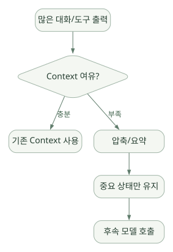

핵심 원리 / 단원 03
항상 읽는 규칙과 남겨 두는 기억
CLAUDE.md·AGENTS.md·Rules와 Session·Auto Memory·압축
먼저 연결해 보기
프로젝트 지침은 행동의 전제와 검증 규칙을 알려 주는 Context이며 방화벽이나 DB 권한처럼 강제되는 보안 정책은 아닙니다. CLAUDE.md와 AGENTS.md의 로딩도 원문이 설명하는 버전·설정 조건을 확인해야 합니다.
Session 기록, 현재 Context, 사람이 관리하는 지침과 Claude가 갱신하는 Auto Memory를 구분하세요. 기억 인덱스와 세부 파일 읽기는 전문 문서 RAG와 다르며, 압축·캐싱은 원본 수치의 영구 보존을 대신하지 못합니다.
읽는 관점무엇을 어디에 저장하고 언제 읽는지, 정보가 파일에 있다는 사실과 강제 정책이라는 주장을 구분하세요.
8. Instruction: CLAUDE.md·AGENTS.md·Rules#
8.1 Instruction은 무엇인가?#
Instruction은 Agent가 수행할 작업의 전제, 규칙, 프로젝트 관습, 검증 방법을 알려 주는 컨텍스트다. Agent를 완전하게 제어하는 보안 정책은 아니다.
- Instruction: “분석 결과는 표준 단위로 작성”, “테스트 통과 전 완료라고 말하지 말 것”.
- Enforced policy: DB 계정이
SELECT만 가능, 네트워크 송신이 차단, 위험 명령을 Hook에서 거부.
둘을 혼동하면 “시스템 프롬프트에 쓰면 지켜지겠지”라는 잘못된 보안 설계가 된다. 공식 문서는 CLAUDE.md 같은 파일을 모델에 전달되는 컨텍스트로 설명하고, 반드시 강제할 행동에는 Hook 등을 권장한다. [R04][R10]
8.2 CLAUDE.md가 하는 일#
CLAUDE.md는 프로젝트 설명과 반복되는 지시를 Markdown으로 기록한다.
# 프로젝트 개요
이 프로젝트는 공개 예제 반도체 공정 데이터를 분석하는 학습용 저장소다.
## 구조
- data/: 합성·공개 입력 데이터
- src/: 분석 코드
- tests/: 단위 테스트
- reports/: 검증된 결과물
## 작업 규칙
- 데이터를 분석하기 전에 컬럼 정의와 단위를 확인한다.
- 결측값을 삭제하거나 보간했다면 이유와 개수를 보고한다.
- 불량률은 분모·분자를 함께 제시한다.
- 테스트를 실행하지 않았다면 실행하지 않았다고 표기한다.
- 민감한 데이터가 있을 수 있으므로 외부 API 업로드를 수행하지 않는다.위 예시는 학습용 규칙이며 방화벽·권한 정책이 아니다. 실제 외부 전송은 OS·네트워크·Tool 설정으로 제어한다.
8.3 어디에 두는가?#
공식 문서는 사용자·프로젝트·로컬·조직 단위의 다양한 CLAUDE.md 및 .claude/rules/ 패턴을 제공한다. 일반적으로 프로젝트 루트의 CLAUDE.md를 팀의 기본 지침 파일로 사용하고, 특수한 범위는 하위 디렉터리 또는 rules/의 경로 규칙으로 나눈다. 사용 시점·탐색 방향·우선순위는 문서와 설치 버전을 따른다. [R04]
semiconductor-agent-demo/
├── CLAUDE.md # 프로젝트 공통 지침
├── .claude/
│ ├── settings.json # 팀 공유 설정
│ ├── settings.local.json # 개인 로컬 설정: 커밋 금지
│ ├── rules/
│ │ ├── data-quality.md # 데이터 검증 규칙
│ │ └── python.md # Python 작업 규칙
│ ├── skills/
│ │ └── wafer-eda/
│ │ └── SKILL.md
│ └── agents/
│ └── data-reviewer.md
├── src/
├── tests/
└── data/흔히
CLAUDE.md와.claude/를 한 덩어리로 말하지만 파일의 역할이 다르다.CLAUDE.md는 지시 텍스트,settings.json은 실행 구성,skills/는 작업별 지식,agents/는 별도 Subagent 정의다.
8.4 AGENTS.md도 지원하는가? — 2026년 10월 기준 중요 변경#
지원한다. 단, 언제나 CLAUDE.md와 함께 자동 로딩되는 것은 아니다. 공식 Memory 문서에 따르면 Claude Code는 v2.1.277 이후 직접 AGENTS.md를 읽는 기능을 제공한다. 기본 설정인 claude-md-or-agents-md에서는 작업 디렉터리 또는 상위에 로딩 대상 CLAUDE.md·CLAUDE.local.md가 없을 때 관련 AGENTS.md를 읽는다. claude-md-and-agents-md로 두 유형을 함께 읽도록 설정할 수도 있다. 사용자 홈의 ~/.claude/CLAUDE.md나 조직 관리 지침은 기본 판단에서 일부 예외다. [R04]
| 상황 | 동작(기본 정책의 개념) |
|---|---|
현재 프로젝트에 CLAUDE.md 존재 |
CLAUDE.md 중심, AGENTS.md 직접 로딩 조건은 충족되지 않을 수 있음 |
CLAUDE.md 없음·AGENTS.md 존재 |
AGENTS.md 직접 로딩 가능 |
| 두 파일 모두 활용 원함 | Project instructions 설정에서 claude-md-and-agents-md 선택 |
| 구버전·미지원 환경 | CLAUDE.md에서 @AGENTS.md를 import하는 호환 경로 검토 |
교훈: 2026년 이후 Claude Code를 무조건 “AGENTS.md를 읽지 못하고 CLAUDE.md만 지원한다”고 설명하는 것은 틀릴 수 있다. 설정과 버전을 같이 확인해야 한다.
8.5 CLAUDE.md와 AGENTS.md를 함께 유지하는 권장 방식#
여러 코딩 에이전트가 같은 저장소를 이용한다면 공통 규칙을 AGENTS.md에 두고 Claude 전용 지시만 CLAUDE.md에 추가하는 방법을 고려한다.
<!-- CLAUDE.md 예시 -->
@AGENTS.md
## Claude Code 전용
- 계획을 먼저 서술하고 파일 변경을 제안한다.
- 분석 재현성 검증 시 테스트 명령과 출력 경로를 보고한다.이때 import 지원·중복 로딩 방지·윈도우 심볼릭 링크 주의사항은 공식 Memory 문서를 따른다. 단순히 “AGENTS.md를 읽어라”는 서술보다 @AGENTS.md가 명확하다. [R04]
8.6 .claude/rules와 범위별 규칙#
전체 프로젝트에 항상 필요한 짧은 지시는 루트에 두고, 특정 확장자 또는 디렉터리에서만 필요한 지시는 .claude/rules/로 분리한다. 이렇게 하면 불필요한 토큰 사용과 지시 충돌을 줄일 수 있다.
<!-- .claude/rules/python.md: 설명용 예시 -->
---
paths:
- "src/**/*.py"
- "tests/**/*.py"
---
- Python 분석 코드는 타입 힌트와 입력 검증을 포함한다.
- 통계 지표 계산에는 단위 테스트를 추가한다.
- 랜덤 샘플링에 seed를 명시한다.검증 과제: 실제 세션에서 /context 등을 통해 어떤 Instruction 파일이 로딩되었는지 확인한다. 파일이 있다고 해서 언제나 모든 내용이 시스템 프롬프트 최상위 권한이 되는 것은 아니다.
8.7 좋은 Instruction 작성법#
- 짧고 검사 가능한 규칙을 쓴다.
- 프로젝트 구조·기동 명령·테스트 명령을 명확히 지정한다.
- 작업 목적과 “하면 안 되는 것”을 구분한다.
- 데이터 단위와 출력 형식 등 검증 가능 항목을 넣는다.
- 모든 지식을
CLAUDE.md에 밀어 넣지 말고 Skills·문서 링크로 분리한다. - 서로 다른 문서에서 상충하는 지시를 만들지 않는다.
- 보안은 실행 정책으로 강제한다.
잘못된 예: “항상 정확한 반도체 분석 결과를 내라.”
개선된 예: “불량률 계산 시 산식, 분모, 필터링 조건, 결측 개수, 입력 파일 해시를 함께 출력하고 tests/test_metrics.py를 통과했는지 보고하라.”
9. Memory·Session·Context·Compaction#
9.1 네 가지를 반드시 분리해서 이해하기#
| 개념 | 의미 | 지속 방식 | 대표 목적 |
|---|---|---|---|
| Context Window | 지금 모델에 제공되는 입력 예산 | 현재 모델 요청 단위 | 다음 응답에 필요한 정보 제공 |
| Session/Transcript | 대화·Tool 상호작용의 기록 | 환경에 따라 디스크·서비스 | 이어서 작업하기·감사 |
| CLAUDE.md/AGENTS.md | 사람이 작성한 프로젝트 지시 | 파일 | 반복되는 프로젝트 규칙 |
| Auto Memory | Claude가 작성·업데이트하는 학습 메모 | 프로젝트별 파일 | 선호·교정·반복 발견사항 기억 |
| RAG(별도 시스템) | 외부 문서의 검색·선별·주입 | 인덱스·DB·검색서비스 | 대량 지식의 근거 있는 접근 |
중요: “대화 이력을 저장한다 = 벡터 RAG 기반 장기 기억을 제공한다”는 등식은 성립하지 않는다.
9.2 CLAUDE.md와 Auto Memory#
공식 Memory 문서는 두 체계를 명확히 구분한다. 사람이 작성한 CLAUDE.md는 규칙·프로젝트 안내, Auto Memory는 Claude가 교정 내용·유용한 패턴 등을 기록하는 파일이다. 둘 다 새로운 세션에 컨텍스트로 이용될 수 있지만 내용이 항상 반드시 준수되는 강제 정책은 아니다. [R04]
일반적인 로컬 프로젝트 메모리 디렉터리 예시:
~/.claude/projects/<project>/memory/
├── MEMORY.md # 인덱스/중요 메모리 요약
├── testing-notes.md
├── data-schema-notes.md
└── user-preferences.mdMEMORY.md 인덱스의 처음 200줄 또는 25KB 중 먼저 도달하는 범위가 새 세션에 로드되는 것으로 공식 문서가 설명한다. 별도 세부 파일은 관련될 때 파일 도구를 통해 읽을 수 있다. Auto Memory는 단일 머신 로컬인 경우가 많으며, Git 프로젝트에서는 worktree 간 공유될 수 있다. 클라우드·원격 환경과 동기화된다고 가정해서는 안 된다. [R04]
9.3 Auto Memory는 어떻게 검색하는가?#
공식 문서의 기본 설명은 파일 기반 메모리 인덱스 + 필요 시 세부 메모리 파일을 읽는 방식이다. 특정 버전의 내부 모든 검색·우선순위 알고리즘이 공개된 것은 아니다. 다음을 구분한다.
- 확인 가능:
MEMORY.md파일을 인덱스로 쓰고 Topic 파일을 필요 시 읽는 흐름. - 그렇게 단정할 수 없음: 모든 기억이 벡터 임베딩으로 자동 인덱싱되며 ANN 검색된다는 주장.
- 설계 가능: 별도 MCP 서버에 사내 지식 임베딩 검색기를 붙여 RAG 기능을 제공.
반도체 전문 용어·공정 SOP처럼 출처와 버전이 중요한 정보는 Auto Memory보다 승인된 문서 관리·RAG·근거 링크가 적절한 경우가 많다.
9.4 Session 기록과 이어가기#
claude -c, --resume, /resume 등의 경로를 통해 대화를 이어갈 수 있다. 관련 세션 트랜스크립트와 프로젝트 경로 관리 방식은 버전·환경에 따른다. [R19]
주의사항:
- 새 세션에서는 모델 Context가 다시 구성된다.
- 이전 세션 파일이 있다고 해서 이전의 모든 메시지가 매 호출에 그대로 포함된다고 보장되지 않는다.
resume한 내용은 이전 권한·파일 상태·외부 서비스 상태가 달라졌을 수 있다.- 공유 로그에는 소스코드·명령·민감 문자열이 포함될 수 있으므로 저장소로 올리기 전에 검사해야 한다.
9.5 Context Compaction#
대화와 Tool 결과가 길어지면 입력 가능한 토큰 예산을 압박한다. Claude Code는 자동/수동 압축 등으로 큰 대화의 일부를 요약해 지속 작업을 지원한다. 압축은 정보를 보존하는 완전한 백업이 아니다. [R20]
넓은 도식은 가로로 이동하며 읽을 수 있습니다. 도식 크게 보기 ↗

원문에 수록된 학습용 도식입니다. 노드·화살표·분기 라벨을 보존해 다시 배치했습니다. 세부 조건과 예시·구현의 구분은 앞뒤 본문을 함께 읽으세요.
도식 원문 보기 (Mermaid)
flowchart LR
A[많은 대화/도구 출력] --> B{Context 여유?}
B -->|충분| C[기존 Context 사용]
B -->|부족| D[압축/요약]
D --> E[중요 상태만 유지]
E --> F[후속 모델 호출]압축 위험#
- 정확한 숫자·SQL 조건·파일 경로·에러 문맥이 요약에서 누락될 수 있다.
- 이미 수행한 작업을 다시 실행하거나 아직 하지 않은 일을 한 것으로 기억할 수 있다.
- 실험 파라미터와 검증 상태가 불완전해질 수 있다.
대응: 실험 설정은 대화가 아니라 config.yaml·실행 산출물·테스트 결과에 저장하고, 작업 단계별로 상태 요약 파일을 별도 유지한다.
9.6 Prompt caching은 메모리 저장이 아니다#
Prompt caching은 반복 입력의 계산·토큰 비용 절감에 관계된 모델 API/호출 최적화다. 이전 대화나 업무 지식을 자동적으로 영구 보존하는 사용자 메모리 기능과 다른 개념이다. [R21]
9.7 Memory에 남기면 안 되는 것#
- API 키, 비밀번호, DB 접속 문자열의 민감 부분.
- 확인되지 않은 도메인 지식을 확정 사실처럼 기록한 내용.
- 유효기간이 지난 공정 기준, 변경된 불량 임계값.
- 개인정보·고객 기밀·공정 레시피 등을 정책 없이 저장한 것.
설계 제안: 정책값은 검토 가능한 버전 관리 문서에, 이력은 감사 로그에, 장기 검색 지식은 승인된 인덱스에 나누어 저장한다.